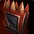
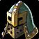
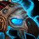

Cursed Vision of Sargeras
Cursed Vision of SargerasCursed Vision of Sargeras385 armor, 39 agility, 46 stamina, 108 attack power, 21 hit rating (1.33%), 38 crit rating (1.72%)Sockets meta, yellow · Socket bonus 6 staminaDrops from Illidan Stormrage, Black Temple
385 armor, 39 agility, 46 stamina, 108 attack power, 21 hit rating
(1.33%), 38 crit rating (1.72%)
Sockets meta, yellow · Socket bonus 6 stamina
Drops from Illidan Stormrage, Black Temple
What influencers say
Creators disagree about this item
Showing 5 of 45 captured remarks, widest reach first, with every view
represented
Sarthe
Sarthe · 109:13
77k views
It depends
Sarthe says enhancement shamans benefit the most from Cursed Vision and
that an argument can be made for enhancement, or for fury on cleave, but
that as a guild leader he would still give the first one to a hunter and
split the three big items. He adds a guild not min-maxing can hand the
first Cursed Vision to a ret so long as everyone knows what that means.
Zatar (Classic Wow Builds)
Zatar (Classic Wow Builds) · 120:36
67k views
Speaks well of it
Zatar gives a spec-level order for Cursed Vision: enhancement shaman
first because it gains the most stats by a large margin, then hunter or
ret, whichever is better, since both can use its hit to ease gearing,
then fury, then rogue and arms last because rogues reach their tier helm
quickly. He notes rets wait behind many casters for tier, and says there
is no shame in giving it to a strong player who simply wants it.
Veramos Gaming
Veramos Gaming · 3:03
18k views
Argues against it
Veramos says survival should wear the Gronnstalker helmet instead,
because this helm is worth about one personal DPS while costing roughly
30 raid-wide attack power from Expose Weakness, and he treats that as a
relief given how contested it is.
The only remark that prices the helm in raid-wide attack power through
Expose Weakness rather than in personal DPS.
Griftin
Griftin · 12:50
6k views
Argues against it
Griftin gives it three stars for feral and says he would not grab it,
because ferals still wear the tier helm or Wolfshead Helm even though
offset stats are closing in.
Griftin argues the feral exception. This is NOT a conflict with fc-001,
which speaks to the fury warrior: Anker wants the helm for physical DPS
generally and Griftin says feral is the exception, and both are true.
Zatar states the two halves in one sentence at 2:07:59 of the Black
Temple breakdown, best in slot for every physical DPS except feral. The
link recorded here until 11 August 2026 trained a reader to discount the
real conflicts.
Anker_64
Anker_64 · 2:08
4k views
It depends
Anker calls Cursed Vision of Sargeras a very strong leather helm from
Illidan that every physical DPS wants, but says he would not give it to
a warrior first because it carries a lot of hit rating fury does not
need, and hit is easier to source next phase from a draenei or a
Dreamstate/Boomkin. He adds that it is still strong enough that a fury
warrior who gets it drops the four-piece tier bonus.
A tier-wide creator on the contested leather helm. He wants it for
physical DPS generally and still argues a fury warrior should not be
first in line for it.
Showing all 9 spec cards.
No specs are selected, so no cards are showing. Use Show every spec to bring all of them back.
Combat Rogue
not yet decided
Constraints
Hit cap9%special
attacks
Precision-5%
Improved Faerie Fire-3%assumed
Gear needs1%
Entry13.1%clear
by 12%
Tier hands14.1%clear
by 13.1%
Tier hands and head14.7%clear
by 13.7%
Dual-wields: white swings miss until 28%, which nothing in this patch
reaches, so hit past the cap still buys accuracy.
White swings stop critting at 50.5%, measured at the special-attack hit
cap.
Nothing rostered reaches it this phase, so crit stays linear all tier.
No haste threshold to protect.
Delta
Cursed Vision of
SargerasCursed Vision of
Sargeras385 armor, 39 agility, 46
stamina, 108 attack power, 21 hit rating (1.33%), 38 crit rating
(1.72%)Sockets meta, yellow ·
Socket bonus 6 staminaDrops from
Illidan Stormrage, Black Temple in Combat Rogue terms
| Stat | Over Tier 6, Mount Hyjal
 Slayer's HelmSlayer's Helm373 armor, 45 agility, 55 stamina, 92 attack power, 15 hit rating (0.95%), 28 crit rating (1.27%)Sockets meta, yellow · Socket bonus 4 hit ratingTier set piece, Slayer's Armor. Bought with a token, never a raid drop |
Over Tier 5, Serpentshrine
Cavern
 Deathmantle HelmDeathmantle Helm341 armor, 39 agility, 48 stamina, 78 attack power, 25 crit rating (1.13%)Sockets meta, red · Socket bonus 8 attack power, 8 ranged attack powerTier set piece, Deathmantle. Bought with a token, never a raid drop |
Over best pre-phase off-piece, Engineering Deathblow X11 GogglesDeathblow X11 Goggles326 armor, 48 agility, 28 stamina, 76 attack power, 11 hit rating (0.70%)Sockets meta, blue · Socket bonus 4 agility | |||
|---|---|---|---|---|---|---|
| Change | Converted | Change | Converted | Change | Converted | |
| armor | +12 | +44 | +59 | |||
| agility | -6 | -6 attack power · -0.15% melee crit | 0 | -9 | -9 attack power · -0.23% melee crit | |
| stamina | -9 | -2 | +18 | |||
| attack power | +16 | +30 | +32 | |||
| hit | +6 | +0.38% | +21 | +1.33% | +10 | +0.63% |
| crit | +10 | +0.45% | +13 | +0.59% | +38 | +1.72% |
| Net | +10 attack power +0.30% melee crit +0.38% melee and ranged hit | +30 attack power +1.33% melee and ranged hit +0.59% melee crit | +23 attack power +1.50% melee crit +0.63% melee and ranged hit | |||
No best Phase 3 off-piece exists for this spec outside its tier sets and
outside arena, so that comparison is not shown.
Arms Warrior
not yet decided
Constraints
Hit cap9%special
attacks
Improved Faerie Fire-3%assumed
Gear needs6%
The Precision talent sits in the Fury tree, which this build does not
reach.
Entry5.1%short
by 0.8%
Tier hands8.4%clear
by 2.4%
Tier hands and head7%clear by
1.1%
Tier rows assume both reachable tokens. Onslaught Gauntlets are 87.78
EPV against 101.88 on the Shade of Akama gloves they displace, and the
head token costs the Destroyer four-piece.
White swings stop critting at 69.5%, measured at the special-attack hit
cap.
Nothing rostered reaches it this phase, so crit stays linear all tier.
No haste threshold to protect.
Delta
Cursed Vision of
SargerasCursed Vision of
Sargeras385 armor, 39 agility, 46
stamina, 108 attack power, 21 hit rating (1.33%), 38 crit rating
(1.72%)Sockets meta, yellow ·
Socket bonus 6 staminaDrops from
Illidan Stormrage, Black Temple in Arms Warrior terms
| Stat | Over Tier 6, Mount Hyjal Onslaught Battle-HelmOnslaught Battle-Helm1483 armor, 54 strength, 41 agility, 54 stamina, 105 armor penetrationSockets meta, red · Socket bonus 4 strengthTier set piece, Onslaught Battlegear. Bought with a token, never a raid drop | Over best Phase 3 off-piece, Black Temple Helm of the Illidari ShattererHelm of the Illidari Shatterer1434 armor, 51 strength, 29 stamina, 34 hit rating (2.16%), 42 crit rating (1.90%)Sockets meta, yellow · Socket bonus 6 staminaDrops from The Illidari Council, Black Temple | Over Tier 5, Serpentshrine Cavern Destroyer Battle-HelmDestroyer Battle-Helm1355 armor, 47 strength, 45 stamina, 21 hit rating (1.33%), 36 crit rating (1.63%)Sockets meta, blue · Socket bonus 4 strengthTier set piece, Destroyer Battlegear. Bought with a token, never a raid drop | Over best pre-phase off-piece, Engineering Furious Gizmatic GogglesFurious Gizmatic Goggles1296 armor, 48 strength, 28 stamina, 13 hit rating (0.82%), 38 crit rating (1.72%)Sockets meta, blue · Socket bonus 4 crit rating | ||||
|---|---|---|---|---|---|---|---|---|
| Change | Converted | Change | Converted | Change | Converted | Change | Converted | |
| armor | -1098 | -1049 | -970 | -911 | ||||
| strength | -54 | -108 attack power | -51 | -102 attack power | -47 | -94 attack power | -48 | -96 attack power |
| agility | -2 | 0 attack power · -0.06% melee crit | +39 | 0 attack power · +1.18% melee crit | +39 | 0 attack power · +1.18% melee crit | +39 | 0 attack power · +1.18% melee crit |
| stamina | -8 | +17 | +1 | +18 | ||||
| attack power | +108 | +108 | +108 | +108 | ||||
| hit | +21 | +1.33% | -13 | -0.82% | 0 | +8 | +0.51% | |
| crit | +38 | +1.72% | -4 | -0.18% | +2 | +0.09% | 0 | |
| armor penetration | -105 | 0 | 0 | 0 | ||||
| Net | +1.66% melee crit +1.33% melee and ranged hit | +6 attack power +1.00% melee crit -0.82% melee and ranged hit | +14 attack power +1.27% melee crit | +12 attack power +1.18% melee crit +0.51% melee and ranged hit | ||||
Fury Warrior
not yet decided
Constraints
Hit cap9%special
attacks
Improved Faerie Fire-3%assumed
Gear needs6%
The Precision talent is reachable in the Fury tree and this raid's build
does not take it.
Entry8.8%clear
by 2.8%
Tier hands10.8%clear
by 4.8%
Tier hands and head9.4%clear
by 3.5%
Dual-wields: white swings miss until 28%, which nothing in this patch
reaches, so hit past the cap still buys accuracy.
White swings stop critting at 50.5%, measured at the special-attack hit
cap.
Nothing rostered reaches it this phase, so crit stays linear all tier.
No haste threshold to protect.
Delta
Cursed Vision of
SargerasCursed Vision of
Sargeras385 armor, 39 agility, 46
stamina, 108 attack power, 21 hit rating (1.33%), 38 crit rating
(1.72%)Sockets meta, yellow ·
Socket bonus 6 staminaDrops from
Illidan Stormrage, Black Temple in Fury Warrior terms
| Stat | Over Tier 6, Mount Hyjal Onslaught Battle-HelmOnslaught Battle-Helm1483 armor, 54 strength, 41 agility, 54 stamina, 105 armor penetrationSockets meta, red · Socket bonus 4 strengthTier set piece, Onslaught Battlegear. Bought with a token, never a raid drop | Over best Phase 3 off-piece, Black Temple Helm of the Illidari ShattererHelm of the Illidari Shatterer1434 armor, 51 strength, 29 stamina, 34 hit rating (2.16%), 42 crit rating (1.90%)Sockets meta, yellow · Socket bonus 6 staminaDrops from The Illidari Council, Black Temple | Over Tier 5, Serpentshrine Cavern Destroyer Battle-HelmDestroyer Battle-Helm1355 armor, 47 strength, 45 stamina, 21 hit rating (1.33%), 36 crit rating (1.63%)Sockets meta, blue · Socket bonus 4 strengthTier set piece, Destroyer Battlegear. Bought with a token, never a raid drop | Over best pre-phase off-piece, Engineering Furious Gizmatic GogglesFurious Gizmatic Goggles1296 armor, 48 strength, 28 stamina, 13 hit rating (0.82%), 38 crit rating (1.72%)Sockets meta, blue · Socket bonus 4 crit rating | ||||
|---|---|---|---|---|---|---|---|---|
| Change | Converted | Change | Converted | Change | Converted | Change | Converted | |
| armor | -1098 | -1049 | -970 | -911 | ||||
| strength | -54 | -108 attack power | -51 | -102 attack power | -47 | -94 attack power | -48 | -96 attack power |
| agility | -2 | 0 attack power · -0.06% melee crit | +39 | 0 attack power · +1.18% melee crit | +39 | 0 attack power · +1.18% melee crit | +39 | 0 attack power · +1.18% melee crit |
| stamina | -8 | +17 | +1 | +18 | ||||
| attack power | +108 | +108 | +108 | +108 | ||||
| hit | +21 | +1.33% | -13 | -0.82% | 0 | +8 | +0.51% | |
| crit | +38 | +1.72% | -4 | -0.18% | +2 | +0.09% | 0 | |
| armor penetration | -105 | 0 | 0 | 0 | ||||
| Net | +1.66% melee crit +1.33% melee and ranged hit | +6 attack power +1.00% melee crit -0.82% melee and ranged hit | +14 attack power +1.27% melee crit | +12 attack power +1.18% melee crit +0.51% melee and ranged hit | ||||
Retribution Paladin
not yet decided
Constraints
Hit cap9%special
attacks
Precision-3%
Improved Faerie Fire-3%assumed
Gear needs3%
Entry3.7%clear
by 0.7%
Tier hands5%clear by
2%
Tier hands and head5.4%clear
by 2.4%
Tier rows assume both reachable tokens. Lightbringer Gauntlets are 56.46
EPV against 65.57 on the non-tier gloves they displace, and no
Retribution set bonus in either tier is a damage bonus.
White swings stop critting at 69.5%, measured at the special-attack hit
cap.
Nothing rostered reaches it this phase, so crit stays linear all tier.
No haste threshold to protect.
Delta
Cursed Vision of
SargerasCursed Vision of
Sargeras385 armor, 39 agility, 46
stamina, 108 attack power, 21 hit rating (1.33%), 38 crit rating
(1.72%)Sockets meta, yellow ·
Socket bonus 6 staminaDrops from
Illidan Stormrage, Black Temple in Retribution Paladin terms
| Stat | Over Tier 6, Mount Hyjal Lightbringer War-HelmLightbringer War-Helm1483 armor, 61 strength, 60 stamina, 32 intellect, 23 crit rating (1.04%)Sockets yellow, meta · Socket bonus 4 hit ratingTier set piece, Lightbringer Battlegear. Bought with a token, never a raid drop | Over best Phase 3 off-piece, Black Temple Helm of the Illidari ShattererHelm of the Illidari Shatterer1434 armor, 51 strength, 29 stamina, 34 hit rating (2.16%), 42 crit rating (1.90%)Sockets meta, yellow · Socket bonus 6 staminaDrops from The Illidari Council, Black Temple | Over Tier 5, Serpentshrine Cavern Crystalforge War-HelmCrystalforge War-Helm1355 armor, 56 strength, 24 agility, 46 stamina, 23 intellectSockets red, meta · Socket bonus 4 agilityTier set piece, Crystalforge Battlegear. Bought with a token, never a raid drop | Over best pre-phase off-piece, Engineering Furious Gizmatic GogglesFurious Gizmatic Goggles1296 armor, 48 strength, 28 stamina, 13 hit rating (0.82%), 38 crit rating (1.72%)Sockets meta, blue · Socket bonus 4 crit rating | ||||
|---|---|---|---|---|---|---|---|---|
| Change | Converted | Change | Converted | Change | Converted | Change | Converted | |
| armor | -1098 | -1049 | -970 | -911 | ||||
| strength | -61 | -122 attack power | -51 | -102 attack power | -56 | -112 attack power | -48 | -96 attack power |
| agility | +39 | 0 attack power · +1.56% melee crit | +39 | 0 attack power · +1.56% melee crit | +15 | 0 attack power · +0.60% melee crit | +39 | 0 attack power · +1.56% melee crit |
| stamina | -14 | +17 | 0 | +18 | ||||
| intellect | -32 | 0 | -23 | 0 | ||||
| attack power | +108 | +108 | +108 | +108 | ||||
| hit | +21 | +1.33% | -13 | -0.82% | +21 | +1.33% | +8 | +0.51% |
| crit | +15 | +0.68% | -4 | -0.18% | +38 | +1.72% | 0 | |
| Net | -14 attack power +2.24% melee crit +1.33% melee and ranged hit | +6 attack power +1.38% melee crit -0.82% melee and ranged hit | -4 attack power +2.32% melee crit +1.33% melee and ranged hit | +12 attack power +1.56% melee crit +0.51% melee and ranged hit | ||||
Enhancement Shaman
not yet decided
Constraints
Hit cap9%special
attacks
Dual Wield Specialization-6%
Nature's Guidance-3%
Improved Faerie Fire-3%assumed
Gear needs0%
Entry9.8%clear
by 12.9%
Talent and the assumed raid debuff cover this cap outright, so every
point of hit on an item is surplus.
Tier hands12.6%clear
by 15.6%
Tier hands, keeps T5 helm12.6%clear
by 15.6%
Tier rows assume both reachable tokens. The published guide states in
its own words that neither Tier 6 set bonus is worth chasing for this
spec.
Dual-wields: white swings miss until 28%, which nothing in this patch
reaches, so hit past the cap still buys accuracy.
White swings stop critting at 50.5%, measured at the special-attack hit
cap.
Nothing rostered reaches it this phase, so crit stays linear all tier.
No haste threshold to protect.
Delta
Cursed Vision of
SargerasCursed Vision of
Sargeras385 armor, 39 agility, 46
stamina, 108 attack power, 21 hit rating (1.33%), 38 crit rating
(1.72%)Sockets meta, yellow ·
Socket bonus 6 staminaDrops from
Illidan Stormrage, Black Temple in Enhancement Shaman terms
| Stat | Over Tier 6, Mount Hyjal Skyshatter CoverSkyshatter Cover830 armor, 53 strength, 55 stamina, 27 intellect, 20 hit rating (1.27%), 28 crit rating (1.27%)Sockets meta, yellow · Socket bonus 6 staminaTier set piece, Skyshatter Harness. Bought with a token, never a raid drop | Over best Phase 3 off-piece, Black Temple Forest Prowler's HelmForest Prowler's Helm803 armor, 42 agility, 29 stamina, 28 intellect, 100 attack power, 20 crit rating (0.91%)Sockets red, metaDrops from The Illidari Council, Black Temple | Over Tier 5, Serpentshrine Cavern Cataclysm HelmCataclysm Helm759 armor, 41 strength, 32 agility, 46 stamina, 23 intellect, 21 hit rating (1.33%)Sockets meta, yellow · Socket bonus 4 agilityTier set piece, Cataclysm Harness. Bought with a token, never a raid drop | Over best pre-phase off-piece, Engineering Surestrike Goggles v2.0Surestrike Goggles v2.0726 armor, 28 stamina, 96 attack power, 13 hit rating (0.82%), 38 crit rating (1.72%)Sockets meta, blue · Socket bonus 4 agility | ||||
|---|---|---|---|---|---|---|---|---|
| Change | Converted | Change | Converted | Change | Converted | Change | Converted | |
| armor | -445 | -418 | -374 | -341 | ||||
| strength | -53 | -106 attack power | 0 | -41 | -82 attack power | 0 | ||
| agility | +39 | 0 attack power · +1.56% melee crit | -3 | 0 attack power · -0.12% melee crit | +7 | 0 attack power · +0.28% melee crit | +39 | 0 attack power · +1.56% melee crit |
| stamina | -9 | +17 | 0 | +18 | ||||
| intellect | -27 | -28 | -23 | 0 | ||||
| attack power | +108 | +8 | +108 | +12 | ||||
| hit | +1 | +0.06% | +21 | +1.33% | 0 | +8 | +0.51% | |
| crit | +10 | +0.45% | +18 | +0.82% | +38 | +1.72% | 0 | |
| Net | +2 attack power +2.01% melee crit +0.06% melee and ranged hit | +8 attack power +0.70% melee crit +1.33% melee and ranged hit | +26 attack power +2.00% melee crit | +12 attack power +1.56% melee crit +0.51% melee and ranged hit | ||||
Feral Cat
not yet decided
Constraints
Hit cap9%special
attacks
Improved Faerie Fire-3%assumed
Gear needs6%
No hit talent exists for this spec.
Entry10.8%clear
by 4.9%
Tier hands12.2%clear
by 6.2%
Tier hands, keeps T5 helm12.2%clear
by 6.2%
Tier rows assume both reachable tokens. The head slot is Wolfshead Helm,
which is not tier, and the hands token alone leaves one Tier 6 piece and
so no Tier 6 bonus while cutting Nordrassil from four pieces to three.
White swings stop critting at 69.5%, measured at the special-attack hit
cap.
Nothing rostered reaches it this phase, so crit stays linear all tier.
No haste threshold to protect.
Delta
Cursed Vision of
SargerasCursed Vision of
Sargeras385 armor, 39 agility, 46
stamina, 108 attack power, 21 hit rating (1.33%), 38 crit rating
(1.72%)Sockets meta, yellow ·
Socket bonus 6 staminaDrops from
Illidan Stormrage, Black Temple in Feral Cat terms
| Stat | Over Tier 6, Mount Hyjal
 Thunderheart CoverThunderheart Cover611 armor, 53 strength, 39 agility, 49 stamina, 20 intellectSockets blue, meta · Socket bonus 4 strengthTier set piece, Thunderheart Harness. Bought with a token, never a raid drop |
Over Tier 5, Serpentshrine Cavern Nordrassil HeaddressNordrassil Headdress565 armor, 46 strength, 33 agility, 43 stamina, 17 intellectSockets red, meta · Socket bonus 6 staminaTier set piece, Nordrassil Harness. Bought with a token, never a raid drop | Over best pre-phase off-piece, Engineering Deathblow X11 GogglesDeathblow X11 Goggles326 armor, 48 agility, 28 stamina, 76 attack power, 11 hit rating (0.70%)Sockets meta, blue · Socket bonus 4 agility | |||
|---|---|---|---|---|---|---|
| Change | Converted | Change | Converted | Change | Converted | |
| armor | -226 | -180 | +59 | |||
| strength | -53 | -106 attack power | -46 | -92 attack power | 0 | |
| agility | 0 | +6 | +6 attack power · +0.24% melee crit | -9 | -9 attack power · -0.36% melee crit | |
| stamina | -3 | +3 | +18 | |||
| intellect | -20 | -17 | 0 | |||
| attack power | +108 | +108 | +32 | |||
| hit | +21 | +1.33% | +21 | +1.33% | +10 | +0.63% |
| crit | +38 | +1.72% | +38 | +1.72% | +38 | +1.72% |
| Net | +2 attack power +1.33% melee and ranged hit +1.72% melee crit | +22 attack power +1.96% melee crit +1.33% melee and ranged hit | +23 attack power +1.36% melee crit +0.63% melee and ranged hit | |||
No best Phase 3 off-piece exists for this spec outside its tier sets and
outside arena, so that comparison is not shown.
Feral Bear
not yet decided
Constraints
Hit cap9%threat
floor
Improved Faerie Fire-3%assumed
Gear needs6%
No hit talent exists for this spec.
Entry3.2%short
by 2.8%
Tier hands2.3%short
by 3.7%
Closed by 6 hit gems against 6 sockets in the set.
Tier hands, keeps T5 helm2.3%short
by 3.7%
Closed by 6 hit gems against 6 sockets in the set.
Tier rows assume both reachable tokens. A druid has five tier slots, and
the Nordrassil four-piece plus the Thunderheart two-piece need six.
The constraint that decides this spec's gear is crit immunity, which it
reaches at 415 defense skill, or 154 defense rating from gear.
Survival of the Fittest supplies 3% of that reduction, which is why this
spec's figure is lower than a plate tank's.
This spec cannot hold all four avoidance entries, so it cannot
sustainably push crushing blows off the attack table.
White swings stop critting at 69.5%, measured at the special-attack hit
cap.
Nothing rostered reaches it this phase, so crit stays linear all tier.
No haste threshold to protect.
Delta
Cursed Vision of
SargerasCursed Vision of
Sargeras385 armor, 39 agility, 46
stamina, 108 attack power, 21 hit rating (1.33%), 38 crit rating
(1.72%)Sockets meta, yellow ·
Socket bonus 6 staminaDrops from
Illidan Stormrage, Black Temple in Feral Bear terms
| Stat | Over Tier 6, Mount Hyjal Thunderheart CoverThunderheart Cover611 armor, 53 strength, 39 agility, 49 stamina, 20 intellectSockets blue, meta · Socket bonus 4 strengthTier set piece, Thunderheart Harness. Bought with a token, never a raid drop | Over Tier 5, Serpentshrine Cavern Nordrassil HeaddressNordrassil Headdress565 armor, 46 strength, 33 agility, 43 stamina, 17 intellectSockets red, meta · Socket bonus 6 staminaTier set piece, Nordrassil Harness. Bought with a token, never a raid drop | Over best pre-phase off-piece, Engineering Deathblow X11 GogglesDeathblow X11 Goggles326 armor, 48 agility, 28 stamina, 76 attack power, 11 hit rating (0.70%)Sockets meta, blue · Socket bonus 4 agility | |||
|---|---|---|---|---|---|---|
| Change | Converted | Change | Converted | Change | Converted | |
| armor | -226 | -180 | +59 | |||
| strength | -53 | -106 attack power · -53 strength | -46 | -92 attack power · -46 strength | 0 | |
| agility | 0 | +6 | 0 attack power · +0.24% melee crit · +6 agility | -9 | 0 attack power · -0.36% melee crit · -9 agility | |
| stamina | -3 | -3 stamina | +3 | +3 stamina | +18 | +18 stamina |
| intellect | -20 | -20 intellect | -17 | -17 intellect | 0 | |
| attack power | +108 | +108 | +32 | |||
| hit | +21 | +1.33% | +21 | +1.33% | +10 | +0.63% |
| crit | +38 | +1.72% | +38 | +1.72% | +38 | +1.72% |
| Net | -53 strength -3 stamina -20 intellect | -46 strength +6 agility +3 stamina -17 intellect | -9 agility +18 stamina | |||
No best Phase 3 off-piece exists for this spec outside its tier sets and
outside arena, so that comparison is not shown.
Beast Mastery Hunter
not yet decided
Constraints
Hit cap9%shots
Improved Faerie Fire-3%assumed
Gear needs6%
The Surefooted talent sits in the Survival tree, which this build does
not reach.
Entry7.7%clear
by 1.7%
Tier hands6.7%clear
by 0.7%
Tier hands and head7.5%clear
by 1.5%
No crit cap.
No haste threshold to protect.
Delta
Cursed Vision of
SargerasCursed Vision of
Sargeras385 armor, 39 agility, 46
stamina, 108 attack power, 21 hit rating (1.33%), 38 crit rating
(1.72%)Sockets meta, yellow ·
Socket bonus 6 staminaDrops from
Illidan Stormrage, Black Temple in Beast Mastery Hunter terms
| Stat | Over Tier 6, Mount Hyjal Gronnstalker's HelmetGronnstalker's Helmet830 armor, 45 agility, 45 stamina, 29 intellect, 90 attack powerSockets red, meta · Socket bonus 4 crit ratingTier set piece, Gronnstalker's Armor. Bought with a token, never a raid drop | Over best Phase 3 off-piece, Black Temple Forest Prowler's HelmForest Prowler's Helm803 armor, 42 agility, 29 stamina, 28 intellect, 100 attack power, 20 crit rating (0.91%)Sockets red, metaDrops from The Illidari Council, Black Temple | Over Tier 5, Serpentshrine Cavern Rift Stalker HelmRift Stalker Helm759 armor, 40 agility, 36 stamina, 25 intellect, 82 attack powerSockets yellow, meta · Socket bonus 6 staminaTier set piece, Rift Stalker Armor. Bought with a token, never a raid drop | Over best pre-phase off-piece, Engineering Surestrike Goggles v2.0Surestrike Goggles v2.0726 armor, 28 stamina, 96 attack power, 13 hit rating (0.82%), 38 crit rating (1.72%)Sockets meta, blue · Socket bonus 4 agility | ||||
|---|---|---|---|---|---|---|---|---|
| Change | Converted | Change | Converted | Change | Converted | Change | Converted | |
| armor | -445 | -418 | -374 | -341 | ||||
| agility | -6 | -6 attack power · -6 ranged attack power · -0.15% melee crit | -3 | -3 attack power · -3 ranged attack power · -0.07% melee crit | -1 | -1 attack power · -1 ranged attack power · -0.03% melee crit | +39 | +39 attack power · +39 ranged attack power · +0.97% melee crit |
| stamina | +1 | +17 | +10 | +18 | ||||
| intellect | -29 | -28 | -25 | 0 | ||||
| attack power | +18 | +8 | +26 | +12 | ||||
| hit | +21 | +1.33% | +21 | +1.33% | +21 | +1.33% | +8 | +0.51% |
| crit | +38 | +1.72% | +18 | +0.82% | +38 | +1.72% | 0 | |
| Net | +12 attack power -6 ranged attack power +1.57% melee crit +1.33% melee and ranged hit | +5 attack power -3 ranged attack power +0.74% melee crit +1.33% melee and ranged hit | +25 attack power -1 ranged attack power +1.70% melee crit +1.33% melee and ranged hit | +51 attack power +39 ranged attack power +0.97% melee crit +0.51% melee and ranged hit | ||||
Survival Hunter
not yet decided
Constraints
Hit cap9%shots
Surefooted-3%
Improved Faerie Fire-3%assumed
Gear needs3%
Entry5.5%clear
by 2.5%
Tier hands5.8%clear
by 2.9%
Tier hands and head5.8%clear
by 2.9%
No crit cap.
No haste threshold to protect.
Delta
Cursed Vision of
SargerasCursed Vision of
Sargeras385 armor, 39 agility, 46
stamina, 108 attack power, 21 hit rating (1.33%), 38 crit rating
(1.72%)Sockets meta, yellow ·
Socket bonus 6 staminaDrops from
Illidan Stormrage, Black Temple in Survival Hunter terms
| Stat | Over Tier 6, Mount Hyjal Gronnstalker's HelmetGronnstalker's Helmet830 armor, 45 agility, 45 stamina, 29 intellect, 90 attack powerSockets red, meta · Socket bonus 4 crit ratingTier set piece, Gronnstalker's Armor. Bought with a token, never a raid drop | Over best Phase 3 off-piece, Black Temple Forest Prowler's HelmForest Prowler's Helm803 armor, 42 agility, 29 stamina, 28 intellect, 100 attack power, 20 crit rating (0.91%)Sockets red, metaDrops from The Illidari Council, Black Temple | Over Tier 5, Serpentshrine Cavern Rift Stalker HelmRift Stalker Helm759 armor, 40 agility, 36 stamina, 25 intellect, 82 attack powerSockets yellow, meta · Socket bonus 6 staminaTier set piece, Rift Stalker Armor. Bought with a token, never a raid drop | Over best pre-phase off-piece, Badge of Justice Mask of the DeceiverMask of the Deceiver283 armor, 32 agility, 36 stamina, 64 attack power, 16 hit rating (1.01%)Sockets yellow, meta · Socket bonus 4 agility | ||||
|---|---|---|---|---|---|---|---|---|
| Change | Converted | Change | Converted | Change | Converted | Change | Converted | |
| armor | -445 | -418 | -374 | +102 | ||||
| agility | -6 | -6 attack power · -6 ranged attack power · -0.15% melee crit | -3 | -3 attack power · -3 ranged attack power · -0.07% melee crit | -1 | -1 attack power · -1 ranged attack power · -0.03% melee crit | +7 | +7 attack power · +7 ranged attack power · +0.17% melee crit |
| stamina | +1 | +17 | +10 | +10 | ||||
| intellect | -29 | -28 | -25 | 0 | ||||
| attack power | +18 | +8 | +26 | +44 | ||||
| hit | +21 | +1.33% | +21 | +1.33% | +21 | +1.33% | +5 | +0.32% |
| crit | +38 | +1.72% | +18 | +0.82% | +38 | +1.72% | +38 | +1.72% |
| Net | +12 attack power -6 ranged attack power +1.57% melee crit +1.33% melee and ranged hit | +5 attack power -3 ranged attack power +0.74% melee crit +1.33% melee and ranged hit | +25 attack power -1 ranged attack power +1.70% melee crit +1.33% melee and ranged hit | +51 attack power +7 ranged attack power +1.90% melee crit +0.32% melee and ranged hit | ||||